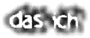
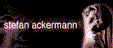
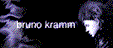

|  | |
|  |  Estos dos extraños demonios (ahora tres), Stefan Ackermann y Bruno Kramm, revolucionaron la escena electrónica europea allá por 1990, cuando sacaron su mini cd "Satanische Verse", con canciones como "Gottes Tod" o "Die Propheten". |
| Crearon un estilo completamente nuevo, que aunque influenciado por la música industrial de la década anterior, era nuevo, puro, limpio, y de una gran fuerza y expresividad.De hecho, en un principio se les incluyó en lo que en auqella época se denominó "Nuevos Artistas de la Muerte" (Neue Deuttsche Todesküntler). | |
Actualmente también se dedican a promocionar nuevos grupos con su sello Danse Macabre. Merece la pena ver su catálogo. Hace no mucho se ha incorporado un nuevo miembro al grupo, Daniel Galda, que ya colaboró en anteriores trabajos. Para encontrar toda la información referente a esta banda, podéis dirigiros a cualquiera de sus páginas en la Internet, de las que recomiendo la oficial, magníficamente hecha y con gran cantidad de información, canciones, merchandisng, samples, etc. |
Das Ich Homepage páginas disponibles. |